Guia do Operador — Hugin Flow
Material completo para aprender a operar o sistema e consultar depois, sempre que tiver dúvidas no dia a dia.
1. Sobre este guia
O Hugin Flow é a plataforma onde sua empresa concentra atendimento, vendas e operação. Como operador, você usará principalmente:
- Chat Omnichannel — conversar com clientes pelo WhatsApp (e outros canais configurados)
- Funis (Kanban) — registrar e acompanhar negócios, pedidos ou demandas em cards
- Chat interno — alinhar com colegas e gestores sem que o cliente veja
Este guia não substitui o manual completo da plataforma (disponível no ícone ?), mas foca no que você precisa no dia a dia como operador.
2. Conceitos essenciais
| Termo | O que significa para você |
|---|---|
| Lead | Pessoa ou empresa contato (nome, telefone, e-mail). Pode ser criada automaticamente quando alguém manda WhatsApp. |
| Card | Registro de uma oportunidade, pedido ou demanda no funil. Tem título, responsável, etapa e histórico. |
| Funil / Kanban | Quadro com colunas (etapas). Você move cards entre colunas conforme o andamento. |
| Conversa | Thread de mensagens com um cliente no Chat Omnichannel. |
| Agente de IA | Respostas automáticas antes de um humano assumir. |
| Takeover / Gestão Humana | Quando você responde e a conversa passa a ser conduzida por pessoa, não pela IA. |
| Chat interno | Mensagens só entre colegas da empresa — nunca vão para o WhatsApp do cliente. |
3. Seu perfil de operador
Você entra como Operador. Isso define o que aparece na sua tela:
| Você pode | Depende do grupo de acesso |
|---|---|
| Atender WhatsApp no Chat Omnichannel | Sim (conversas atribuídas a você ou sem responsável) |
| Ver e mover cards no funil | Sim, se o grupo permitir cards.view e cards.move |
| Criar novos cards | Se o grupo permitir cards.create |
| Anexar arquivos no card | Se o grupo permitir anexos |
| Usar chat interno | Sim (todos da empresa) |
| Conectar WhatsApp / criar canais | Não — função do gestor ou admin |
| Cadastrar usuários | Não — função do gestor ou admin |
Se aparecer Acesso Interditado ou Acesso Restrito, seu grupo não tem permissão para aquela tela. Peça ao gestor para ajustar em Grupos de Acesso.
4. Entrar no sistema
1 Fazer login
- Abra o navegador (Chrome ou Edge recomendados) e acesse
https://app.huginflow.com/login.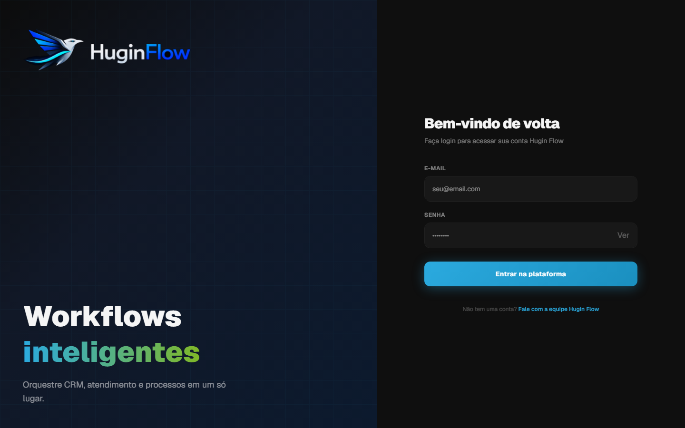
Tela de login — logo Hugin Flow e campos de e-mail e senha - Digite o e-mail corporativo que a empresa ou a RN3 cadastrou para você.
- Digite a senha (no primeiro acesso, será a senha padrão entregue pelo gestor).
- Clique em Entrar na plataforma.
- Se tudo estiver correto, você será levado ao Cockpit (painel inicial). O Cockpit do operador mostra atalhos e fila de trabalho; o do gestor mostra KPIs da empresa.
| Mensagem de erro | O que fazer |
|---|---|
| Credenciais inválidas | Confira e-mail e senha (maiúsculas contam). No 1º acesso, use a senha padrão recebida. |
| Acesso suspenso | A empresa está inativa no sistema. Fale com gestor ou RN3. |
5. Alterar senha (obrigatório no 1º acesso)
No treinamento, todos recebem a mesma senha padrão. O sistema obriga a troca no primeiro login: após entrar, você é levado automaticamente à tela Defina sua senha e não consegue usar o restante do Cockpit até concluir.
2 Trocar sua senha
- Faça login com e-mail e senha padrão entregues pelo gestor.
- O sistema abrirá a tela Defina sua senha (título no topo). O menu lateral ficará bloqueado até você concluir.
- Preencha os três campos: Senha atual (a padrão) · Nova senha · Confirmar nova senha
- Use o ícone de olho para mostrar/ocultar a senha enquanto digita.
- Clique em Salvar nova senha.
- Após salvar, você será levado ao Cockpit com acesso liberado. Opcionalmente, faça logout (Encerrar Sessão no topo) e entre de novo com a nova senha para confirmar.
Regras da nova senha
- Mínimo de 6 caracteres
- Deve ser diferente da senha atual
- Os campos Nova senha e Confirmar devem ser iguais
| Mensagem na tela | Significado |
|---|---|
| Senha atual incorreta | A senha padrão foi digitada errada. Tente de novo ou peça ao gestor. |
| A nova senha e a confirmação devem ser iguais | Repita os dois últimos campos igualmente. |
| A nova senha deve ter no mínimo 6 caracteres | Escolha uma senha um pouco mais longa. |
| A nova senha deve ser diferente da senha atual | Não reutilize a senha padrão — crie uma nova. |
6. Navegação no Cockpit
O menu lateral esquerdo é sua base. Itens mais usados pelo operador:
| Menu | Para quê |
|---|---|
| Cockpit | Painel inicial — visão do dia |
| CRM Workspace | Atalhos para Funis, Leads e Chat |
| Chat Omnichannel | Atender WhatsApp e outros canais |
| Funis | Quadro Kanban de cards |
| Base de Leads | Lista de contatos (consulta e edição) |

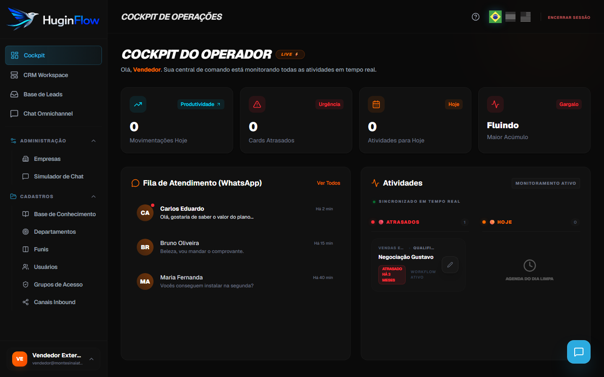
7. Chat Omnichannel (WhatsApp)
Central de atendimento: todas as conversas de WhatsApp (e outros canais) aparecem aqui em tempo real.
3 Abrir o Chat Omnichannel
- No menu lateral, clique em Chat Omnichannel.
- A tela divide em duas partes: Esquerda: lista de conversas · Direita: mensagens da conversa selecionada
- No topo da lista, use Buscar lead ou telefone… para achar alguém rapidamente.
- Clique em uma conversa para abrir o histórico à direita.

Como ler a conversa
- Mensagens do cliente aparecem de um lado (balão escuro)
- Respostas da IA ou do atendente aparecem do outro (balão azul/verde)
- Respostas da IA são identificadas como Agente de IA
- Suas mensagens saem com seu nome ou como Atendente
7.1 Assumir a conversa (takeover humano)
Quando a IA está atendendo, a conversa fica em Atendimento Robotizado. Para você assumir:
4 Assumir e responder ao cliente
- Abra a conversa com indicador Atendimento Robotizado (ícone verde / robô).
- Leia todo o histórico — entenda o que o cliente já perguntou e o que a IA já respondeu.
- Clique no campo de texto na parte inferior. O placeholder diz: Responda aqui para assumir o controle… (IA pausará).
- Digite sua mensagem.
- Envie com o botão Enviar Mensagem ou tecla Enter (use Shift+Enter para quebrar linha sem enviar).
- O status muda para Gestão Humana (laranja). A partir daí, você conduz o atendimento.
- O cliente recebe sua mensagem no WhatsApp normalmente.
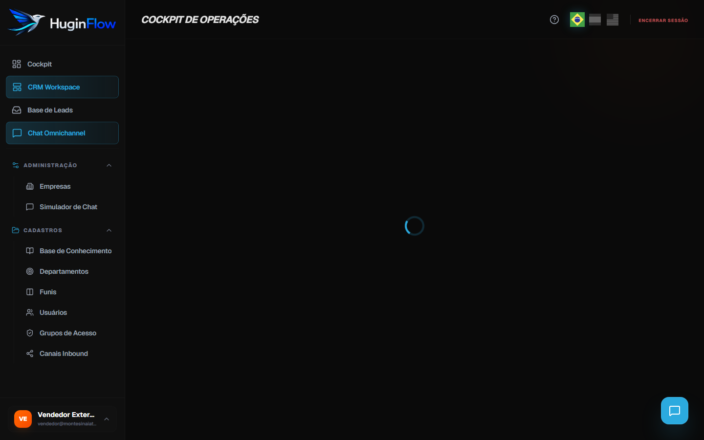
| Status na tela | Quem responde | Sua ação |
|---|---|---|
| Atendimento Robotizado | Agente de IA | Leia e, quando for atender, responda |
| Gestão Humana | Você ou outro atendente | Continue o atendimento; registre no card se necessário |
7.2 Boas práticas no atendimento
- Sempre leia o histórico antes de responder — evita repetir perguntas.
- Não prometa prazo, valor ou condição que não confirmou — use chat interno ou card para validar.
- Mantenha o tom profissional e alinhado à empresa.
- Registre combinados importantes nas observações do card.
- Não use chat interno para falar sobre o cliente na frente de capturas de tela compartilhadas com ele.
Fila do operador
Como operador, você vê conversas:
- Atribuídas a você (
atribuido_a_id= seu usuário), ou - Sem responsável (ainda não pegas por ninguém)
Se não encontrar uma conversa que deveria ver, ela pode estar com outro colega — fale com o gestor.
8. Chat interno da equipe
Canal interno para alinhar com colegas. O cliente nunca vê estas mensagens — use sempre que precisar combinar prazo, valor ou repasse de caso.
5 Abrir o chat interno
- Em qualquer tela do Cockpit, clique no botão flutuante azul (ícone de mensagem) no canto inferior direito.
- Abre o painel Conversas — lista à esquerda, mensagens à direita.
- Use Buscar chats ou cards… para achar um colega ou um card pelo nome.
- Selecione a conversa na lista e digite sua mensagem no campo inferior.
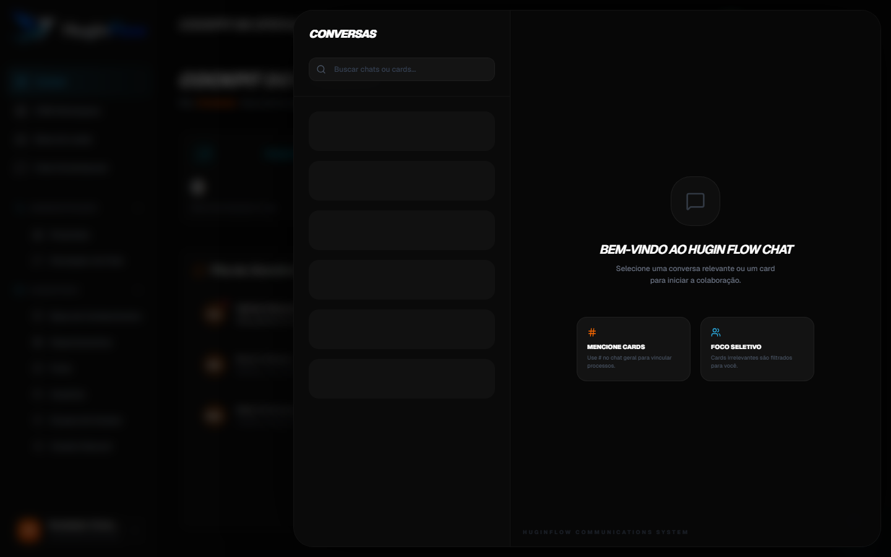
Três formas de conversar internamente
| Tipo | Como identificar | Quando usar |
|---|---|---|
| Conversa direta (DM) | Avatar com iniciais do colega; bolinha verde de “online” | Dúvida rápida, repasse urgente, alinhamento 1:1 |
| Thread do card | Ícone # laranja e etiqueta Card na lista | Discutir aquele negócio/pedido com toda a equipe envolvida |
| Chat privado ligado ao card | Aberto a partir do modal do card → aba Chat Interno → ícone de mensagem ao lado do responsável | Falar só com o responsável sobre aquele card |
8.1 Avisos quando há mensagens internas
Enquanto você trabalha em qualquer tela, o sistema avisa quando chegam mensagens internas:
- Badge vermelho no botão flutuante — número total de mensagens não lidas em todas as conversas.
- Badge na lista — cada conversa com pendência mostra um contador vermelho ao lado da última mensagem.
- Ao abrir e ler a conversa, o contador zera automaticamente para aquela thread.
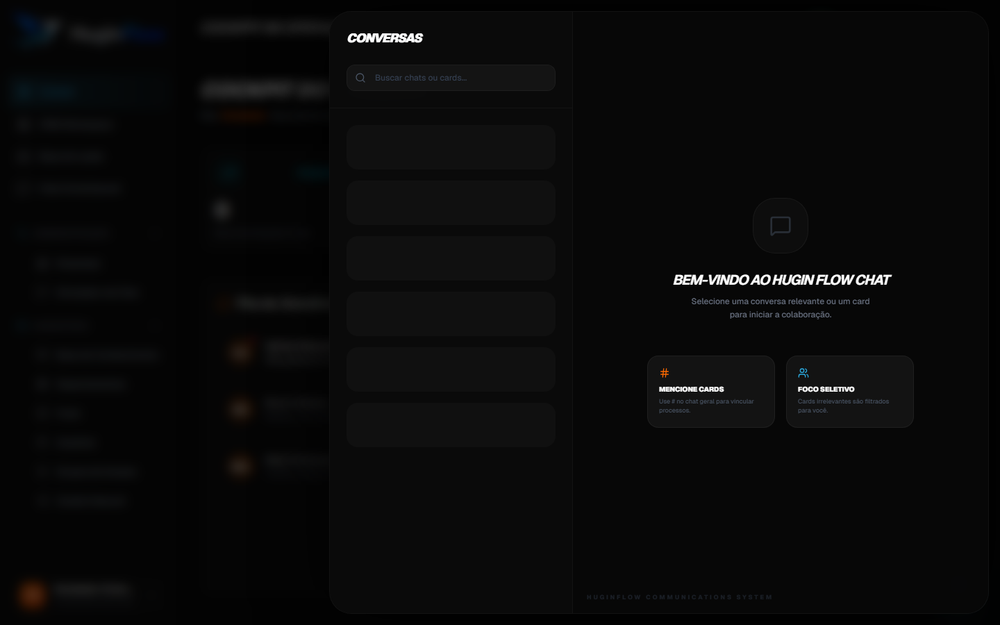
@ — assim você vê o badge aparecer e pratica abrir o painel.
8.2 Abrir e encaminhar um card pelo chat interno
Quando alguém menciona um card com # ou quando a conversa já é uma thread de card, você pode ir direto à gestão completa:
6 Ir do chat interno para o card
- No painel Conversas, selecione uma thread com etiqueta Card (ícone laranja #).
- No topo da área de mensagens, clique em Gestão do Card (botão laranja com ícone de link externo).
- O modal Gestão de Lead abre na aba Dados & Resumo — lá você edita responsável, prazo, observações e anexos.
- Para encaminhar o caso: altere o Responsável (Editar Card) e deixe no chat interno do card um resumo do contexto para o novo atendente.
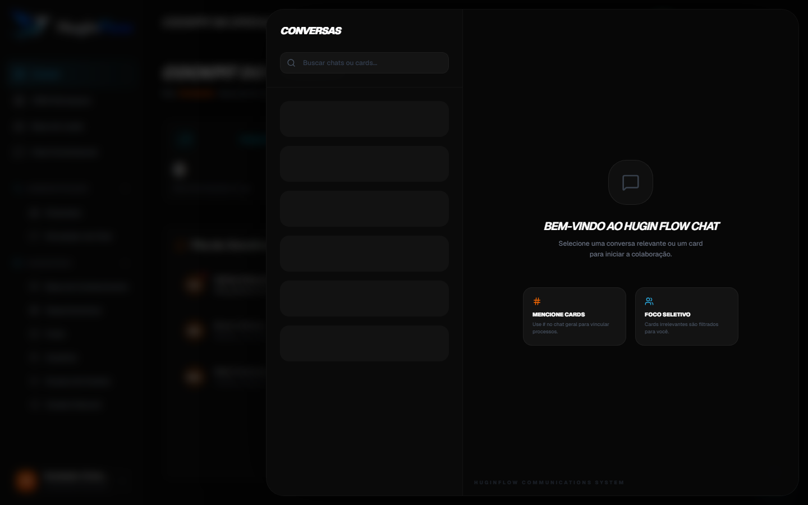
Você também pode buscar o card pelo campo Buscar chats ou cards… — a busca encontra cards pelo título mesmo que ainda não tenham mensagens recentes.
8.3 Marcar colega ou card (@ e #)
7 Mencionar no chat interno global
- No campo de mensagem, digite
@seguido do nome — aparece a lista Mencionar Contato. - Use as setas ↑ ↓ para navegar, Enter para escolher ou Esc para fechar a lista.
- O nome vira
[Nome Completo]na mensagem (formato interno do sistema). - Digite
#para referenciar um card — escolha na lista Mencionar Card; vira[Card: Título]. - Envie a mensagem. Colegas mencionados com
@entram na sua lista e podem filtrar por Mencionados dentro da thread.
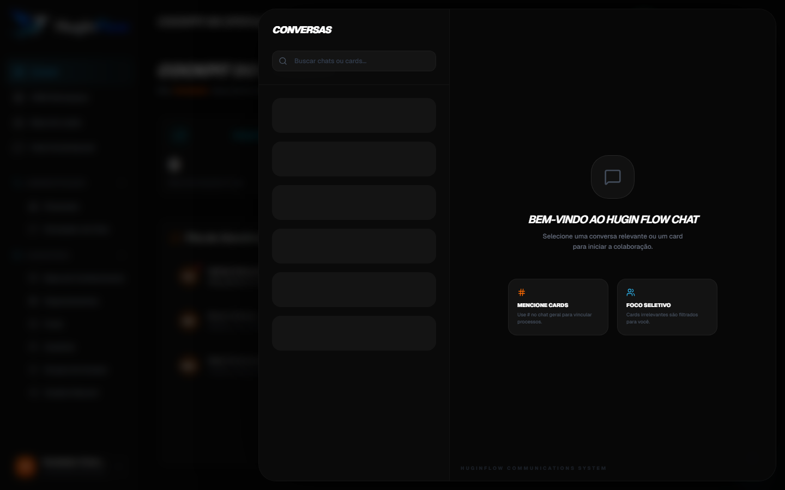
@ ou # — lista de contatos e cards| Atalho | Resultado na mensagem | Efeito |
|---|---|---|
@Maria | [Maria Silva], | Notifica / destaca o colega |
#Pedido | [Card: Pedido 4521], | Vincula visualmente o card (destaque laranja) |
Exemplo completo: Preciso de ajuda [Maria Silva], sobre prazo do [Card: Pedido 4521], cliente aguardando no WhatsApp.
9. Cards e funil (Kanban)
Cada oportunidade, pedido ou demanda importante vira um card que você move entre etapas (colunas). O card concentra dados do cliente, histórico, anexos, chat interno da equipe e ligação com o WhatsApp.
8 Abrir o funil
- Menu → Funis (ou CRM Workspace → Funis).
- Na lista, clique no funil da sua empresa (ex.: Comercial, Atendimento).
- Você verá colunas como PROSPECÇÃO, NEGOCIAÇÃO, FECHADO (nomes podem variar).
- Cada cartão na coluna é um card.

9 Mover um card de etapa
- Clique e segure o card na coluna atual.
- Arraste até a coluna da nova etapa.
- Solte o mouse. O card muda de etapa e o sistema registra na Timeline.
?cardId= compartilhado pela equipe.
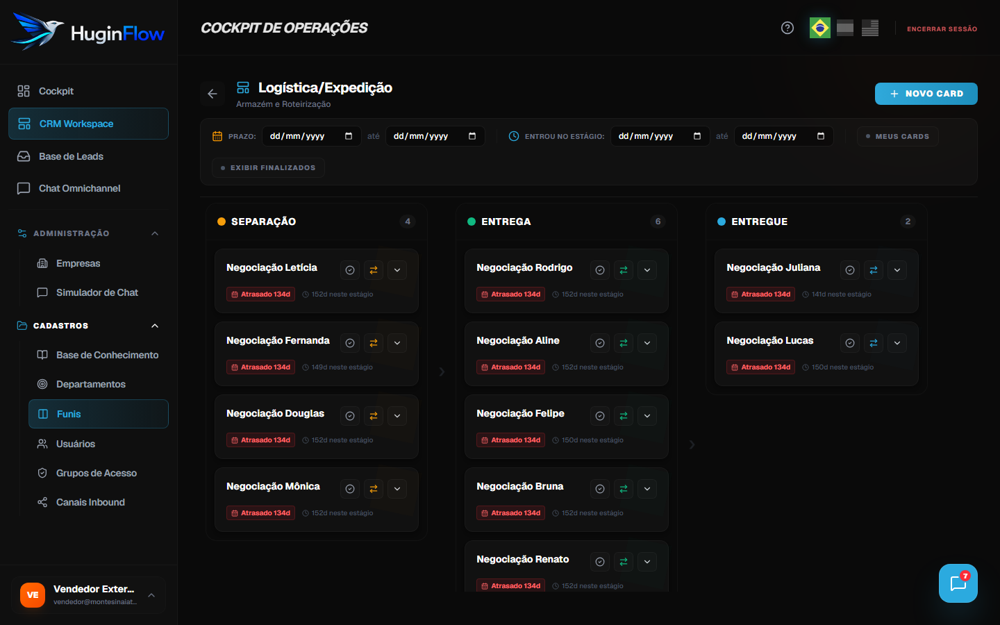
9.1 Atendimento — ligar WhatsApp ao card
O card e a conversa de WhatsApp do cliente ficam conectados quando o canal cria lead e card automaticamente (configuração da empresa). Para atender:
- Atenda o cliente no Chat Omnichannel (§7).
- No funil, localize o card do cliente (filtro Meus Cards ou busca).
- Clique na seta ▼ do tile para expandir o card no Kanban.
- Se houver conversa vinculada, aparece o botão verde Chat — clique para abrir a thread do WhatsApp em nova aba.
- Registre no card o que foi combinado: abra o modal (ícone ↔) → Editar Card → campo Anotações Estratégicas.
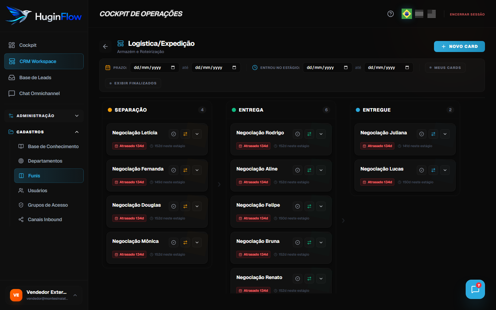
9.2 Encaminhar para outro atendente
Quando outro colega deve assumir o caso:
- Abra o modal do card (ícone ↔ no Kanban).
- Clique em Editar Card.
- No campo Responsável, selecione o colega e clique em Salvar Alterações.
- Na aba Chat Interno, escreva o contexto (o que o cliente quer, o que já foi dito, próximo passo).
- Opcional: clique no ícone de mensagem ao lado do nome do responsável na aba Resumo — abre chat privado sobre este card.
- O novo responsável assume a conversa no WhatsApp quando enviar a primeira mensagem (§7.1).
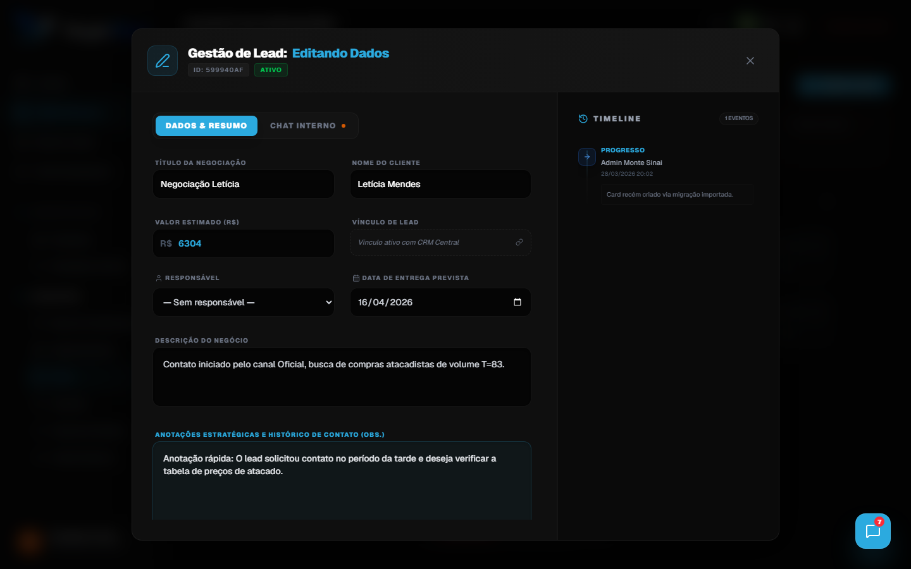
9.3 Enviar card para outro pipeline (funil)
Quando o processo muda de área (ex.: vendas → logística), use a Transferência Rápida de Funil dentro do modal:
- Abra o modal do card (ícone ↔).
- Na aba Dados & Resumo, role até Transferência Rápida de Funil.
- Escolha o Pipeline Destino e o Estágio Inicial.
- Clique em Mover Agora. O card sai deste funil e aparece no destino; a Timeline registra a migração.
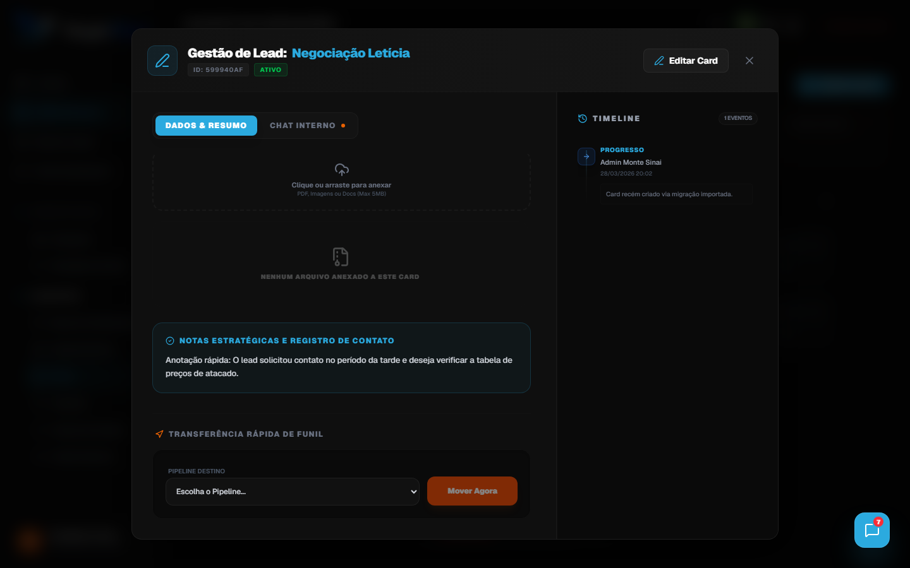
9.4 Enviar mensagem no chat interno do card
Cada card tem uma thread interna visível só para a equipe:
- Abra o modal do card (ícone ↔).
- Clique na aba Chat Interno (ponto laranja indica atividade).
- Digite a nota para a equipe e envie — não vai para o WhatsApp do cliente.
- Use os filtros Todos / Mencionados para ver só mensagens em que você foi citado.
- A mesma thread aparece no painel flutuante de chat interno (§8), com etiqueta Card.
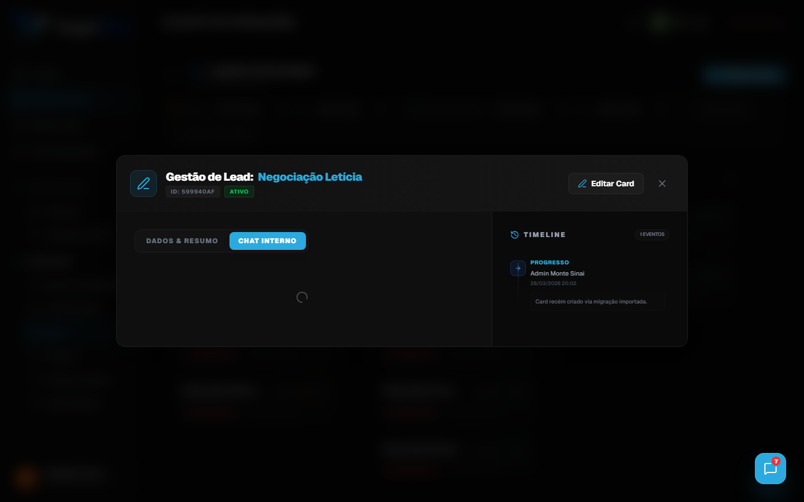
9.5 Marcar usuário ou card (@ e #)
Dentro do chat interno do card (ou no painel global), use os caracteres especiais:
@+ nome → autocomplete → vira[Nome do Colega],#+ título → autocomplete → vira[Card: Título],- Atalhos: ↑ ↓ navegar lista · Enter confirmar · Esc fechar
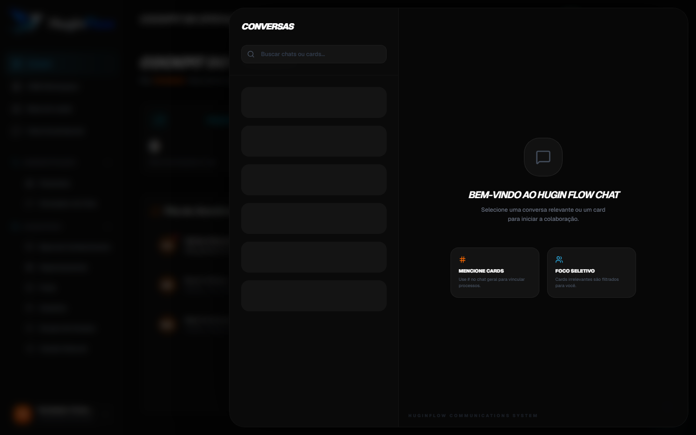
@ no chat do card — colega recebe destaque na thread9.6 Anexar documentos no card
- Abra o modal → aba Dados & Resumo.
- Localize a seção Anexos e Documentos.
- Clique na área tracejada ou arraste o arquivo (PDF, PNG, JPG, DOC, DOCX, XLS, XLSX).
- Tamanho máximo: 5 MB por arquivo.
- Após o upload, baixe pelo ícone de download ou remova pelo ícone de lixeira (se sua permissão permitir).
- Cada anexo gera evento na Timeline (Anexo / Remoção).
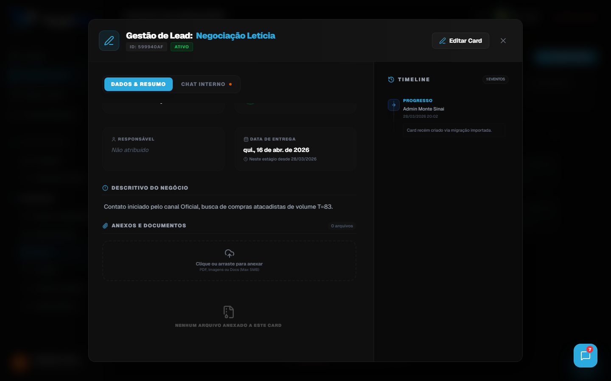
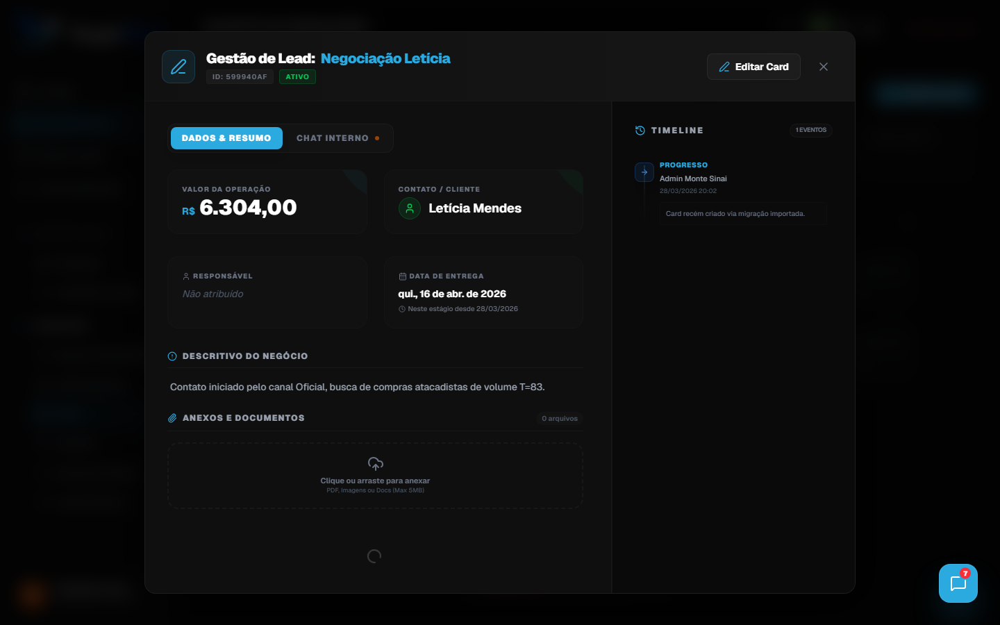
Outras ações no card
| Ação | Onde |
|---|---|
| Editar dados | Modal → Editar Card → Salvar |
| Finalizar / Reabrir | Ícone ✓ no tile do Kanban (verde quando finalizado) |
| Ver histórico | Coluna Timeline no modal (movimentos, edições, anexos) |
| Criar card novo | Botão Novo Card no funil (se permissão cards.create) |
9.7 Filtros útiles no funil
No topo do funil:
| Filtro | Função |
|---|---|
| Meus Cards | Mostra só cards onde você é responsável |
| Exibir Finalizados | Inclui cards já encerrados |
| Prazo / Entrou no Estágio | Filtra por datas |
| Filtros Ativos | Indica que algum filtro está ligado |
10. Fluxo do dia a dia (visão completa)
Use este fluxo como referência sempre que não souber o próximo passo:
- Troquei a senha padrão no primeiro acesso
- Li o histórico antes de responder no WhatsApp
- Assumi a conversa (Gestão Humana) quando fui atender
- Atualizei o card relacionado
- Usei chat interno para dúvidas com a equipe
- Salvei anexos importantes no card
- Card na etapa certa ou finalizado
11. Cenários práticos
Cenário A — Cliente pergunta prazo de entrega no WhatsApp
- Abra a conversa no Chat Omnichannel.
- Assuma e responda: Vou confirmar e já retorno.
- Abra o card do cliente no funil.
- No chat interno do card, escreva: @Logística, qual prazo do [Card: …]?
- Quando souber a resposta, volte ao WhatsApp e informe o cliente.
- Registre a resposta nas observações do card.
Cenário B — Lead novo que a IA já atendeu
- Veja conversa em Atendimento Robotizado.
- Leia o que a IA respondeu — mantenha consistência.
- Assuma com mensagem personalizada (nome do cliente, próximo passo claro).
- Verifique se já existe card; se sim, atualize responsável para você.
- Agende follow-up movendo o card e anotando data nas observações.
Cenário C — Passar caso para outro colega
- No card, altere o campo Responsável para o colega.
- No chat interno do card, explique o contexto: o que o cliente quer, o que já foi dito.
- Se necessário, avise o colega com
@no chat interno. - A conversa no WhatsApp pode continuar com o novo responsável quando ele assumir.
12. Problemas comuns
| Problema | Solução |
|---|---|
| Esqueci minha senha | Peça ao gestor ou RN3 redefinir em Usuários → Editar. Não há link “esqueci senha” no login. |
| Não acho uma conversa no WhatsApp | Busque por telefone/nome. Pode estar atribuída a outro operador — fale com o gestor. |
| IA ainda responde depois que assumi | Confirme se o status é Gestão Humana. Se persistir, avise o gestor/RN3. |
| Cliente não recebeu minha mensagem | Verifique conexão do canal (gestor). Veja se aparece “Enviando…” ou erro na thread. |
| Não consigo mover card | Seu grupo pode não ter permissão cards.move. Peça ao gestor. |
| Não vejo botão Novo Card | Permissão cards.create ausente — peça ao gestor. |
| Anexo não sobe | Arquivo maior que 5 MB ou formato bloqueado. Reduza ou converta o arquivo. |
| Chat interno — colega não respondeu | Use @ com o nome. Em urgência, ligue ou fale pelo canal oficial da empresa. |
| Tela “Acesso Restrito” | Sem permissão para aquela função. Gestor ajusta Grupos de Acesso. |
| Empresa suspensa / Acesso suspenso | Contacte RN3 ou gestor administrativo. |
Para mais detalhes, use o manual completo: ícone ? no Cockpit ou peça ajuda ao suporte.
13. Glossário
| Termo | Definição |
|---|---|
| Cockpit | Painel principal após login |
| CRM Workspace | Hub com atalhos para módulos de CRM |
| Omnichannel | Vários canais (WhatsApp, etc.) no mesmo chat |
| Takeover | Operador assume conversa da IA ao responder |
| Pipeline / Funil | Sequência de etapas comerciais ou operacionais |
| Estágio / Coluna | Etapa do funil onde o card está |
| Timeline | Histórico de eventos do card |
| DM | Mensagem direta entre dois usuários no chat interno |
| Grupo de acesso | Conjunto de permissões do seu usuário |
Apêndice A — Roteiro da aula online (1h30)
Se você está participando do treinamento ao vivo, o instrutor seguirá este cronograma. Use as seções acima como material de apoio durante a aula.
| Horário | Tópico | Seção do guia |
|---|---|---|
| 0:00 – 0:05 | Apresentação e login | §4, §6 |
| 0:05 – 0:15 | Trocar senha padrão (todos) | §5 |
| 0:15 – 0:45 | Chat WhatsApp: abrir, assumir, responder | §7 |
| 0:45 – 1:05 | Chat interno: badge, card, menções | §8 |
| 1:05 – 1:25 | Cards: atendimento, encaminhar, pipeline, anexos | §9 |
| 1:25 – 1:30 | Fluxo integrado e dúvidas | §10, §12 |
Apêndice B — Checklist do operador
Imprima ou salve este checklist. Marque mentalmente a cada atendimento:
- Senha pessoal definida (não uso mais a padrão)
- Li o histórico completo da conversa
- Status Gestão Humana quando estou atendendo
- Card atualizado (dados + observações)
- Chat interno usado para dúvidas com a equipe
- Anexos salvos no card quando relevante
- Card na etapa correta ou finalizado
- Logout ao sair (Encerrar Sessão)